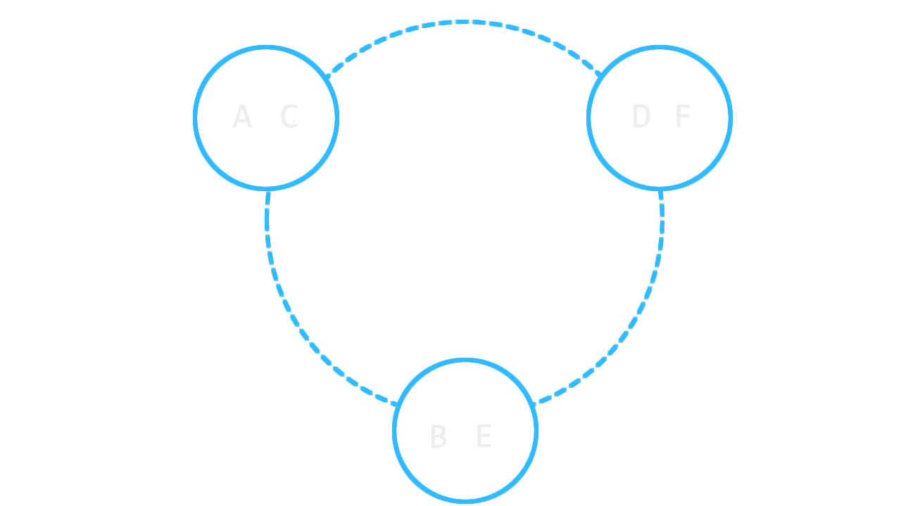

X amount of timesetTimeout / clearTimeout
Asynchronous
Non-Blocking
High Resolution (ms)
Cancelable
Exactly Once Execution Guarantees
10 Lines of Code ( literally )
const timers = Object.create(null);
function set(id, amount, fn) {
if (!timers[id]) {
timers[id] = setTimeout( fn, amount ).unref();
}
}
function cancel(id) {
const ref = timers[id];
return ref && clearTimeout( ref );
}
Distributed Timers - As A Service
Set A Timer
curl -i -XPOST http://localhost:2300/timer -d '{
"timeout": 10000
, "data": "Hello!"
, "callback": {
"transport": "http"
, "uri": "http://some.domain.com/world"
, "method": "post"
}
}'
-H "Content-Type: application/json"
Response
HTTP/1.1 201 CREATED
location: /timer/4adb026b-6ef3-44a8-af16-4d6be0343ecf
Date: Fri, 23 Dec 2016 00:19:13 GMT
Connection: keep-alive
Content-Length: 0
Cancel A Timer
curl -i -XDELETE http://localhost:2300/timer/4adb026b-6ef3-44a8-af16-4d6be0343ecf
Response
HTTP/1.1 202 Accepted
Date: Fri, 23 Dec 2016 00:22:12 GMT
Connection: keep-alive
Content-Length: 0
Hashring
Join & Rebalance
Leave & Rebalance

Bird's eye view
DEMO
Eric Satterwhite
I work at Help.com - We do Node.js- codedependant / esatterwhite
- website: codedependant.net
- twitter: codedependant
- github: github.com/esatterwhite
Skyring
- github: esatterwhite/skyring
- slides: esatterwhite/skyring-lightningtalk-01-17